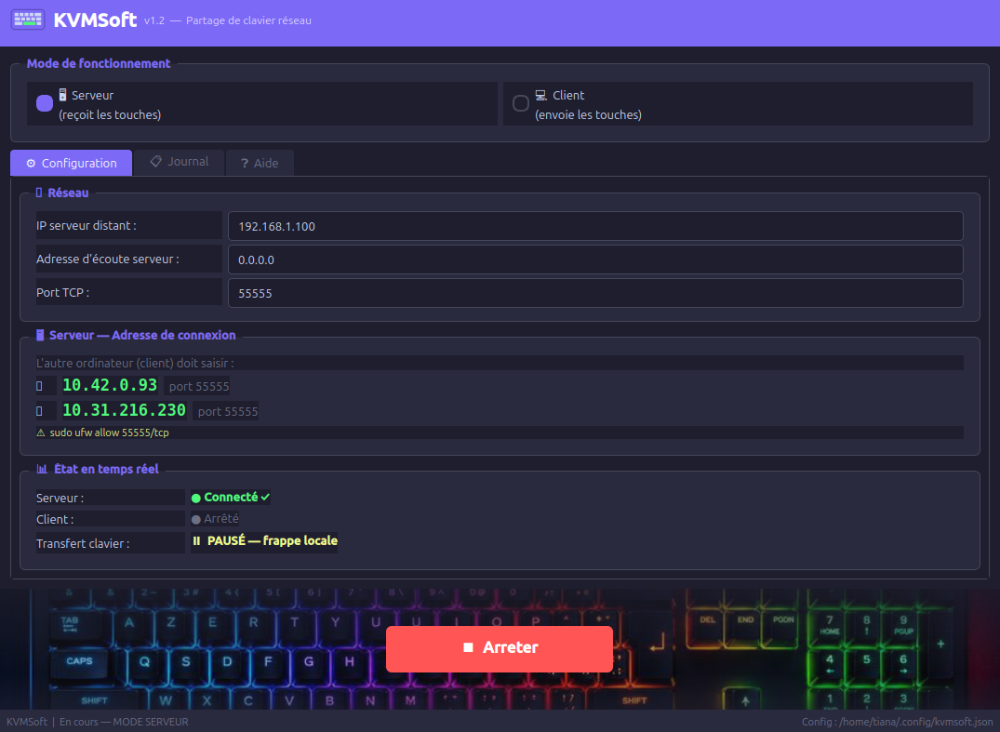

Project Presentation
KVMSoft lets you type on a computer using the keyboard of another machine, over a local network or VPN — no cables, no extra hardware required. A lightweight software KVM built entirely in Python.
How it works
The target machine — receives and executes the keystrokes sent from the client over the network.
The source machine — captures keyboard input and streams it to the server in real time.
About the project
KVMSoft is a pure-software KVM (Keyboard-Video-Mouse) alternative focused on keyboard sharing. It was built to solve a simple problem: controlling multiple Linux machines with a single keyboard without any physical switch or USB dongle.
The application runs as two distinct processes : a server on the machine you want to control and a client on the machine whose keyboard you want to share. Communication happens over a standard TCP connection, making it compatible with any network setup including VPNs like ZeroTier or WireGuard for cross-location usage.
The codebase is deliberately minimal: the core logic lives in a single kvmsoft.py file, and the project ships as a proper Debian package for easy installation and uninstallation.
Installation